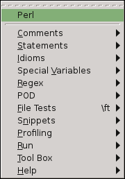

| plug-in overview |
| download vim.org |
| view on GitHub |
| Perl Support – Vim Plug-In | |||||||||
|
|
|
|||||||
|
 root menu |
Perl Support - Vim Plug-In( version 5.3.2 )View the ReadmeRead the Perl Support Help File The key mappings of this plugin (PDF) Covered in the 01/2016 issue of Linux-Magazin, Plugin featured in the Hacker Public Radio episode Useful Vim Plugins Plugin presented at the 11. Deutscher Perl-Workshop in Frankfurt, 2009 Plugin featured in the The Geek Stuff article |
|
| FEATURES |
|---|
Speed-up the development of Perl Scripts:
|
| Menus | Explanation |
|---|---|
 |
Menu Comments : insert comments |
Page updated: February 20 2016 / Mail to: Wolfgang Mehner